Fuente de Datos: Kaggle US Accidents (2016–2023) — sobhanmoosavi/us-accidents (US_Accidents_March23.csv) + Enriquecimiento Demográfico del Censo de EE.UU. (us_state_demographics.csv).
Herramientas: Python 3.13 (Pandas, PyArrow, NumPy, SciPy, Matplotlib, Seaborn), PySpark / Spark SQL, SQLite 3, Power Query (Lenguaje M) y Microsoft Power BI Desktop (DAX).
Integrar datos abiertos de accidentes de tránsito en zonas urbanas y corredores viales de Estados Unidos con variables climáticas, de infraestructura vial y demográficas, con el fin de identificar patrones temporales, factores críticos de severidad y puntos geoespaciales de alta concentración mediante un flujo reproducible ETL + SQL + Power BI + ANOVA.
El pipeline ETL se diseñó bajo una arquitectura de procesamiento por bloques (streaming de 500,000 filas por lote) en src/etl_us_accidents.py, complementada con una versión distribuida en src/etl_pyspark.py, las consultas analíticas en sql/queries_analisis.sql y el script de Power Query M en powerbi/power_query_etl.pq.
US_Accidents_March23.csv (46 columnas originales, 7,728,394 registros, período 2016-01-14 20:18:33 a 2023-03-31 23:30:00).data/us_state_demographics.csv con estimaciones poblacionales oficiales 2023 del Censo de EE.UU., superficie en millas cuadradas, densidad poblacional y región censal (South, West, Midwest, Northeast) para los 50 estados + D.C.Durante la fase de transformación se detectaron y resolvieron problemas críticos de calidad de datos:
| Hallazgo / Métrica de Auditoría | Cantidad Observada | Decisión ETL Aplicada |
|---|---|---|
| Registros brutos extraídos | 7,728,394 | Lectura íntegra por bloques de 500k registros sin muestreo destructivo. |
Registros únicos tras deduplicación por ID | 7,728,394 | Se eliminaron 0 duplicados; 100% de integridad por clave. |
Timestamps con sufijo de nanosegundos (.000000000) | 743,166 | Recorte y parseo estricto yyyy-MM-dd HH:mm:ss (Start_Time y End_Time). |
Valores nulos en Weather_Condition | 173,459 | Imputación semántica a la categoría "Otro" para no perder registros en análisis generales. |
Valores nulos en Street / City | 10,869 / 253 | Etiquetado explícito como "Sin dato" y exclusión solo en rankings de calles/ciudades. |
Outliers extremos de duración (> 1,440 min / 24h) | 34,981 | Preservación en duration_raw_min (para auditoría Power BI) y depuración en duration_clean_min (≤ 24h). |
weather_group): Mapeo de más de 140 cadenas originales en inglés a 6 categorías analíticas estandarizadas en español: Despejado, Nublado, Lluvia, Niebla, Nieve/Hielo y Otro.road_type): Expresiones regulares C++ (PyArrow RE2) sobre Street para distinguir Autopista / Interstate (I-95, Fwy, Expy), Carretera / Highway (US-, SR-, Hwy), Avenida / Boulevard y Calle / Vía Urbana.vehicle_type): El dataset original no posee columna nativa de vehículo; mediante NLP/RE2 sobre Description se extrajeron menciones explícitas de Automóvil / Multivehículo, Camión / Tráiler, Peatón involucrado, Autobús, Motocicleta, SUV / Van / Pickup y Bicicleta, filtrando falsos positivos toponímicos de EE.UU. como "I-80 Bus" (Business Route), "Van Ness Ave", "Van Buren St", "Auto Mall Pkwy" y "Truck Route".data/us_accidents_clean.parquet y carga relacional indexada en SQLite (data/us_accidents.db con tablas accidents y dim_demographics).
# src/etl_us_accidents.py — Normalización temporal y outliers por bloques de 500k filas
audit["dotted_timestamps_fixed"] += int(st_str.str.contains(".", regex=False).sum())
start_dt = pd.to_datetime(st_str.str.slice(0, 19), format="%Y-%m-%d %H:%M:%S", errors="coerce")
dur_raw = (end_dt - start_dt).dt.total_seconds() / 60.0
dur_clean = dur_raw.mask(dur_raw > 1440.0, np.nan)
-- sql/queries_analisis.sql — Tasa demográfica x100k habitantes y variación MoM con función ventana LAG()
SELECT a.state, d.state_name, COUNT(*) AS total_accidentes,
ROUND(COUNT(*) * 100000.0 / d.population_2023, 2) AS tasa_x_100k_hab
FROM accidents a LEFT JOIN dim_demographics d ON a.state = d.state
GROUP BY a.state, d.state_name, d.population_2023 ORDER BY total_accidentes DESC;
// powerbi/power_query_etl.pq — Agrupación climática y cruce demográfico en Lenguaje M
JoinDemografia = Table.NestedJoin(ConVehiculo, {"State"}, DemografiaTyped, {"State"}, "DimDemografia", JoinKind.LeftOuter),
ExpandDemografia = Table.ExpandTableColumn(JoinDemografia, "DimDemografia", {"State_Name", "Region", "Population_2023", "Density_Per_SqMi"})
El dataset cubre 49 entidades (48 estados contiguos + D.C.) y 13,679 ciudades.
1,741,433, 22.53%), seguida de Florida (880,192), Texas (582,837), Carolina del Sur (382,557) y Nueva York (347,960).186,768), seguida por Houston, TX (169,428) y Los Angeles, CA (156,491).7,119 por 100k hab.) y Oregón (4,244 por 100k hab.) superan ampliamente en incidencia per cápita a Texas (1,911) y Nueva York (1,778), demostrando la importancia del cruce demográfico.Top 10 Estados por Frecuencia y Tasa Demográfica:
| Estado | Nombre | Región | Accidentes | % Nacional | Población 2023 | Tasa x 100k Hab. | Sev. Prom. |
|---|---|---|---|---|---|---|---|
| CA | California | West | 1,741,433 | 22.53% | 38,965,193 | 4,469.2 | 2.166 |
| FL | Florida | South | 880,192 | 11.39% | 22,610,726 | 3,892.8 | 2.14 |
| TX | Texas | South | 582,837 | 7.54% | 30,503,301 | 1,910.7 | 2.224 |
| SC | South Carolina | South | 382,557 | 4.95% | 5,373,555 | 7,119.2 | 2.111 |
| NY | New York | Northeast | 347,960 | 4.5% | 19,571,216 | 1,777.9 | 2.26 |
| NC | North Carolina | South | 338,199 | 4.38% | 10,835,491 | 3,121.2 | 2.134 |
| VA | Virginia | South | 303,301 | 3.92% | 8,715,698 | 3,479.9 | 2.279 |
| PA | Pennsylvania | Northeast | 296,620 | 3.84% | 12,961,683 | 2,288.4 | 2.206 |
| MN | Minnesota | Midwest | 192,084 | 2.49% | 5,737,915 | 3,347.6 | 2.162 |
| OR | Oregon | West | 179,660 | 2.32% | 4,233,358 | 4,243.9 | 2.112 |
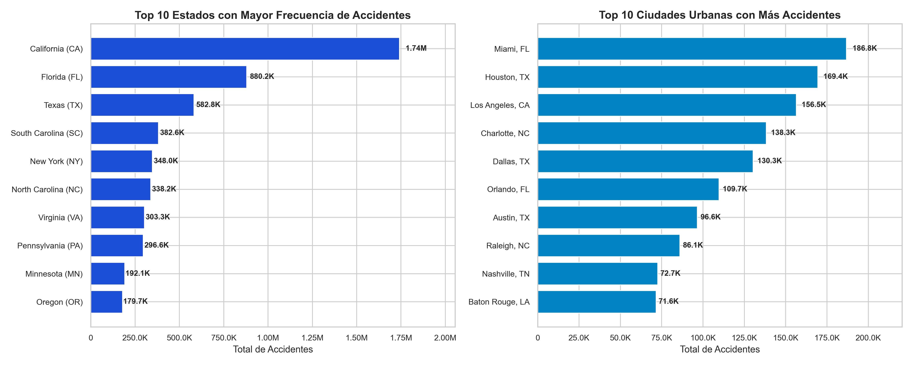
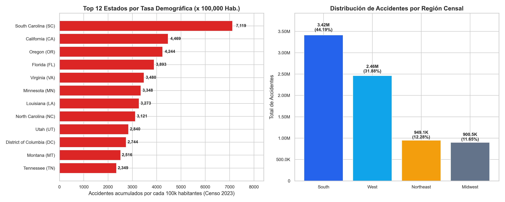
587,472 eventos, 7.6%), dentro de un patrón bimodal laboral con pico matutino (07:00–08:59h) y pico vespertino sostenido (15:00–17:59h).1,366,499 eventos, 17.68%), mientras que sábado y domingo reducen drásticamente la frecuencia conjunta a 1,231,427 eventos (15.93%), aunque presentan mayor severidad promedio (2.259 en domingo y 2.241 en sábado frente a 2.203–2.209 entre semana) debido a velocidades más altas y menor congestión.| Día | Tipo de Día | Total Accidentes | % Total | Severidad Promedio |
|---|---|---|---|---|
| Domingo | Fin de Semana | 562,744 | 7.28% | 2.259 |
| Lunes | Día Laboral | 1,210,921 | 15.67% | 2.209 |
| Martes | Día Laboral | 1,290,929 | 16.7% | 2.205 |
| Miércoles | Día Laboral | 1,312,389 | 16.98% | 2.203 |
| Jueves | Día Laboral | 1,316,229 | 17.03% | 2.204 |
| Viernes | Día Laboral | 1,366,499 | 17.68% | 2.207 |
| Sábado | Fin de Semana | 668,683 | 8.65% | 2.241 |
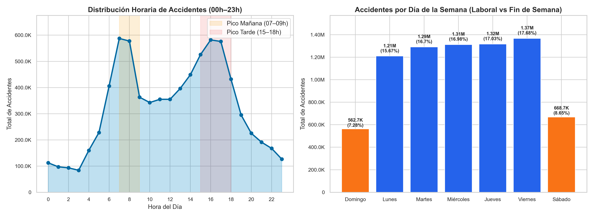
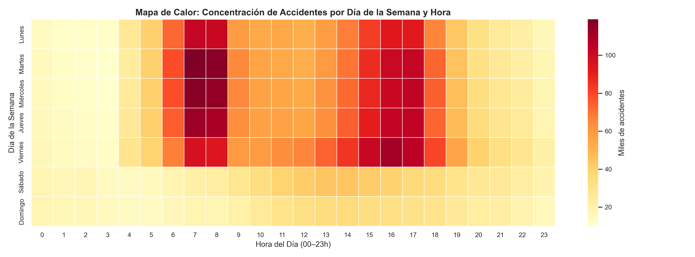
La severidad (escala 1 = impacto mínimo en tráfico a 4 = impacto severo/cierre prolongado) muestra una fuerte concentración en el Nivel 2 (79.67%), seguido del Nivel 3 (16.81%).
En cuanto a la duración, el contraste entre la media bruta (444.4 min, coincidente con los 444 min del tablero Power BI) y la mediana global (74.8 min, coincidente con 75 min en Power BI) evidencia una severa asimetría positiva generada por 34,981 cierres viales extremos superiores a 24 horas. Al depurar a incidentes ≤ 24h, la duración media operativa desciende a 108.0 min (45.7 min en Sev. 1, 114.7 min en Sev. 2, 67.8 min en Sev. 3 por despeje rápido prioritario en autopistas y 185.9 min en Sev. 4 por cierres prolongados).
| Severidad | Total Accidentes | % Total | Dist. Media (mi) | Media Bruta (min) | Media Depurada ≤24h (min) | Mediana Depurada (min) |
|---|---|---|---|---|---|---|
| 1 | 67,366 | 0.87% | 0.115 | 53.78 | 45.73 | 44.75 |
| 2 | 6,156,981 | 79.67% | 0.565 | 485.44 | 114.69 | 77.43 |
| 3 | 1,299,337 | 16.81% | 0.424 | 74.81 | 67.78 | 44.4 |
| 4 | 204,710 | 2.65% | 1.496 | 1685.35 | 185.9 | 126.97 |
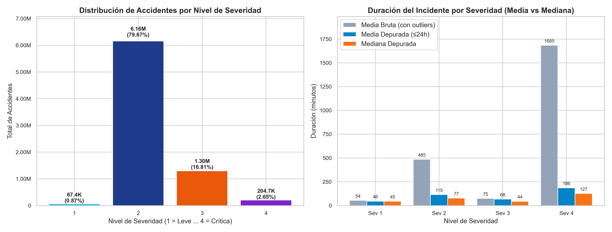
Aunque en volumen absoluto predominan condiciones Despejadas (44.06%) y Nubladas (40.94%) (porque representan la mayor exposición diaria de tráfico), el porcentaje de incidentes graves (Severidad 3 y 4) aumenta en condiciones adversas como Lluvia (22.76%) y Nieve/Hielo (19.95%) frente a Despejado (16.91%), cayendo además la visibilidad promedio de 9.85 mi a 6.15 mi (Lluvia), 3.08 mi (Niebla) y 2.85 mi (Nieve/Hielo).
| Grupo Climático | Total Accidentes | % Total | % Graves (Sev 3–4) | Visibilidad Media (mi) | Temp. Media (°F) |
|---|---|---|---|---|---|
| Despejado | 3,405,216 | 44.06% | 16.91% | 9.85 | 63.53 |
| Nublado | 3,163,750 | 40.94% | 21.65% | 9.57 | 62.5 |
| Lluvia | 600,536 | 7.77% | 22.76% | 6.15 | 59.88 |
| Niebla | 202,142 | 2.62% | 16.11% | 3.08 | 56.1 |
| Nieve/Hielo | 179,916 | 2.33% | 19.95% | 2.85 | 25.07 |
| Otro | 176,834 | 2.29% | 21.53% | 8.72 | 56.32 |
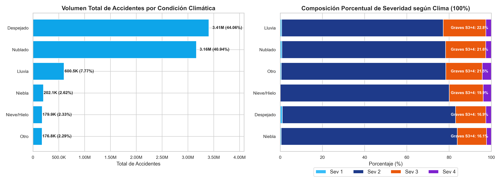
31.07%), pero las Autopistas / Interstates (34.29%) concentran la mayor proporción de accidentes graves (32.44% en Severidad 3–4) frente al 10.17% en calles urbanas, debido a velocidades de circulación y colisiones múltiples.Zuni Rd SE), el ranking real por volumen está encabezado por grandes arterias interestatales (I-95 N con 78,430, I-95 S con 74,528 y I-5 N con 71,968).Traffic_Signal: 1,143,772), Cruces Peatonales (Crossing: 873,763) e Intersecciones (Junction: 571,342).| Tipo de Vía | Total Accidentes | % Total | Severidad Promedio | % Graves (Sev 3–4) |
|---|---|---|---|---|
| Autopista / Interstate | 2,649,733 | 34.29% | 2.344 | 32.44% |
| Calle / Vía Urbana | 2,401,533 | 31.07% | 2.113 | 10.17% |
| Avenida / Boulevard | 994,796 | 12.87% | 2.118 | 11.55% |
| Otra Vía | 855,568 | 11.07% | 2.206 | 18.47% |
| Carretera / Highway | 815,895 | 10.56% | 2.2 | 15.43% |
| Sin dato | 10,869 | 0.14% | 2.157 | 12.3% |
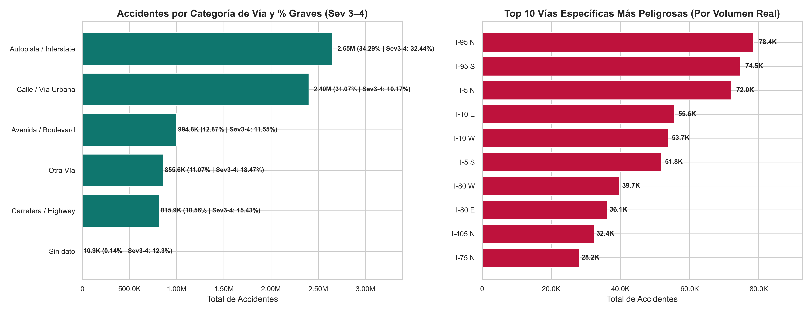
El volumen anual muestra un crecimiento sostenido desde 2016 (410,821) hasta alcanzar su máximo histórico en 2022 (1,762,452 accidentes) —impulsado por el retorno pleno de la movilidad post-pandemia y mayor cobertura de sensores—, cerrando 2023 con cobertura parcial de tres meses hasta marzo (246,633). No obstante, la severidad promedio descendió de 2.389 (2017) a 2.072 (2022) al ampliarse la detección de incidentes leves/moderados. Estacionalmente, Diciembre (847,343, 10.96%) y el último trimestre (octubre–diciembre) concentran la mayor accidentalidad por menor luz diurna y clima invernal.
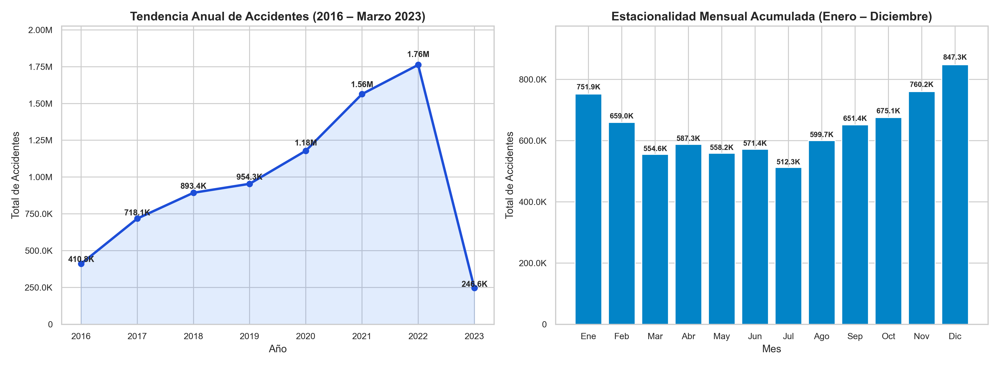
Dado que Kaggle no incluye columna estructurada de vehículo (~99.1% de las descripciones detallan únicamente la vía y afectación de carriles), el módulo NLP extrajo menciones explícitas válidas en 68,252 descripciones (0.88% del total) tras excluir falsos positivos toponímicos:
45,195; 66.22%) seguido por Camión / Tráiler (16,389; 24.01%), Peatón involucrado (2,559; 3.75%), Autobús (1,502; 2.20%) y Motocicleta (1,136; 1.66%).2.521 mayor severidad promedio, 39.67% graves, 124.95 min) y Automóvil / Multivehículo (43.02% graves, 2.474 sev. prom.) por ocurrir predominantemente en autopistas de alta velocidad, mientras Motocicleta alcanza 14.88% de eventos graves y SUV / Van / Pickup registra la mayor duración media (158.20 min).| Tipo de Vehículo (NLP Description) | Accidentes | % sobre Identificados | Severidad Prom. | % Graves (S3–4) | Duración Media (min) |
|---|---|---|---|---|---|
| Automóvil / Multivehículo | 45,195 | 66.22% | 2.474 | 43.02% | 88.81 |
| Camión / Tráiler | 16,389 | 24.01% | 2.521 | 39.67% | 124.95 |
| Peatón involucrado | 2,559 | 3.75% | 2.066 | 5.2% | 63.04 |
| Autobús | 1,502 | 2.2% | 2.041 | 5.06% | 94.03 |
| Motocicleta | 1,136 | 1.66% | 2.178 | 14.88% | 87.41 |
| SUV / Van / Pickup | 1,008 | 1.48% | 2.012 | 1.09% | 158.2 |
| Bicicleta | 463 | 0.68% | 2.0 | 1.51% | 74.36 |
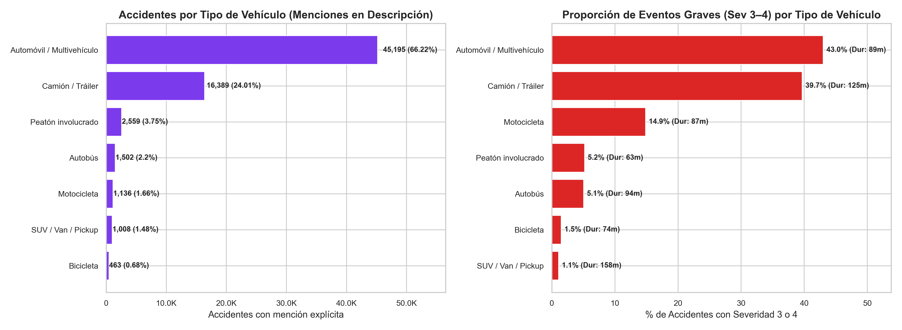
El análisis por cuadrículas de 0.1° × 0.1° confirma clústeres urbanos críticos en Los Ángeles / Sur de California, Miami–Orlando–Tampa (Florida), Houston–Dallas–Austin (Texas), Charlotte–Raleigh (Carolina del Norte) y el corredor atlántico Noreste (NY–NJ–PA).
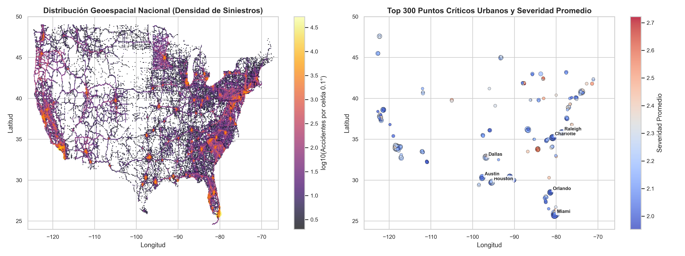
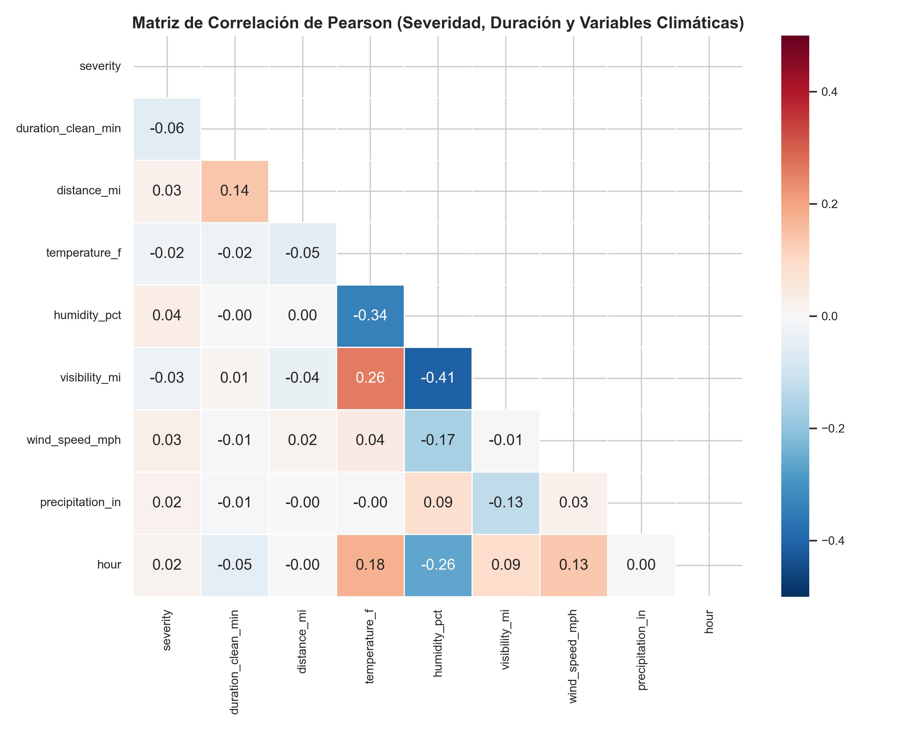
El tablero desarrollado en Power BI Desktop (LO DE POWER BI YA ESTA FINALIZADO, desplegado en powerbi/dashboard_powerbi.html) organiza la exploración en 8 vistas interactivas:
| # | Vista en Power BI | Captura | Hallazgo y Auditoría Técnica |
|---|---|---|---|
| 1 | Frecuencia por Estado y Top 10 Ciudades | assets/powerbi/01_frecuencia_estado_top10_ciudades.jpg | Mapa coroplético + ranking Miami, Houston, Los Angeles, Charlotte, Dallas, Orlando, Austin, Raleigh, Nashville y Baton Rouge. |
| 2 | KPIs, Patrón Horario y Día de la Semana | assets/powerbi/02_kpis_hora_dia_semana.jpg | Suma semanal exacta 7,728K (viernes 1,366K líder). Card FinDeSemana=366 afectada por contexto YTD 2023 (total real Sáb+Dom: 1,231,427). |
| 3 | Severidad y Clima al 100% | assets/powerbi/03_severidad_clima_porcentaje.jpg | Donut exacto 7728K (67K / 6157K / 1299K / 205K) y proporción de severidad 3 superior al 20% en Lluvia y Otro. |
| 4 | Accidentes por Clima y Estado | assets/powerbi/04_accidentes_clima_estado.jpg | Totales exactos: Despejado 3,369,545, Nublado 2,915,115, Otro 623,936, Lluvia 478,761, Niebla 191,668, Nieve/Hielo 149,367. |
| 5 | Top 10 Vías Más Peligrosas | assets/powerbi/05_top10_vias_peligrosas.png | Se detectó ordenamiento alfabético descendente (Zuni Rd SE) en lugar de por volumen (I-95 N, I-95 S), corregido en Python/SQL. |
| 6 | Duración Promedio vs Mediana | assets/powerbi/06_duracion_promedio_severidad.png | Media 444 min vs Mediana 75 min, confirmando sesgo por outliers extremos en Severidad 4 (1,685 min). |
| 7 | Tendencias Anuales/Mensuales y Var MoM % | assets/powerbi/07_tendencias_anuales_mensuales_mom.png | Presencia de (Blank) en eje mensual por fechas con nanosegundos .000000000 no parseadas; corregido en ETL Python/M. |
| 8 | Mapa Geoespacial de Severidad | assets/powerbi/08_mapa_geoespacial_severidad.jpg | Burbujas por Start_Lat/Start_Lng con segmentadores interactivos de Estado y Severidad. |


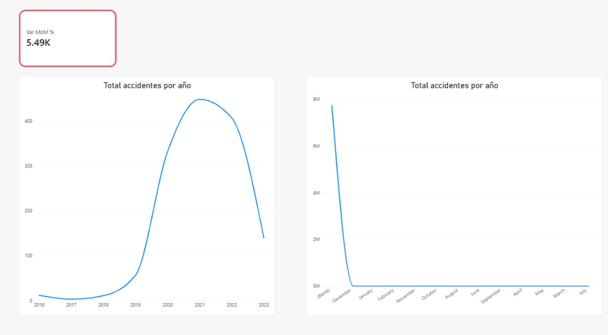

Las definiciones completas y comentadas se encuentran en powerbi/dax_measures.md:
Total Accidentes = COUNTROWS(Accidents): Métrica base aditiva sobre la tabla de hechos que responde a cualquier segmentación de Estado, Ciudad, Clima, Fecha o Severidad (7,728,394 / 8M).Accidentes FinDeSemana = CALCULATE([Total Accidentes], WEEKDAY(Accidents[Start_Time], 2) IN {6, 7}): Modifica el contexto de filtro para aislar sábados y domingos (1,231,427 reales en todo el histórico).Accidentes YTD = TOTALYTD([Total Accidentes], Dim_Calendario[Date]): Acumulado anual hasta la fecha máxima del contexto activo (marzo de 2023).Var MoM % = DIVIDE([Total Accidentes] - [Accidentes Mes Anterior], [Accidentes Mes Anterior], 0): Variación porcentual mensual usando DATEADD(..., -1, MONTH) protegida ante división por cero.Duración Promedio (AVERAGE) y Duración Mediana (MEDIAN): Par de medidas que diagnostican la asimetría de los tiempos de atención (444 min vs 75 min).Tasa x 100k Hab = DIVIDE([Total Accidentes] * 100000, MAX(Dim_Demografia[Population_2023]), 0): Medida de normalización demográfica integrada mediante la tabla del Censo EE.UU.Se ejecutaron 4 modelos ANOVA exactos sobre la totalidad de los registros depurados en Python (src/anova_analysis.py), acompañados de verificación no paramétrica (Kruskal-Wallis H), prueba de homogeneidad de varianzas (Levene), corrección ante heterocedasticidad (Welch ANOVA) y contrastes múltiples post-hoc (Tukey-Kramer HSD).
| Modelo Evaluado | N Válido | F Clásico | p-valor | η² (Tamaño del Efecto) | F Welch | Kruskal-Wallis H | Conclusión Estadística |
|---|---|---|---|---|---|---|---|
| 1. Duración (≤24h) ~ Severidad | 7,693,413 | 86,966.69 | < 1e-300 | 0.03280 | 183,159.02 | 580,876.4 | Se rechaza H₀: la severidad determina diferencias altamente significativas en duración. |
| 2. Severidad ~ Clima | 7,728,394 | 4,663.12 | < 1e-300 | 0.00301 | 4,684.43 | 29,167.6 | Se rechaza H₀: el clima altera significativamente la severidad promedio (Lluvia/Otro más graves). |
| 3. Severidad ~ Franja Horaria | 7,728,394 | 726.09 | < 1e-300 | 0.00038 | 678.00 | 1,419.8 | Se rechaza H₀: la franja horaria (noche/madrugada vs pico) incide en la severidad. |
Severidad ~ Clima × Franja Horaria| Fuente de Variación | gl (df) | Suma de Cuadrados (Tipo III) | Cuadrado Medio | F | p-valor | Eta Parcial² |
|---|---|---|---|---|---|---|
| weather_group | 5 | 4,551.10 | 910.2196 | 3,843.64 | 0.00e+00 | 0.002481 |
| time_slot | 4 | 69.25 | 17.3122 | 73.11 | 4.68e-62 | 0.000038 |
| weather_group × time_slot (Interacción) | 20 | 414.78 | 20.7392 | 87.58 | 0.00e+00 | 0.000227 |
| Error (Dentro de celdas) | 7,728,364 | 1,830,167.66 | 0.2368 | - | - | - |
| Severidad | n | Media (min) | Desv. Est. | Mediana (min) | IC 95% |
|---|---|---|---|---|---|
| 1 | 67,356 | 45.7278 | 29.1757 | 44.75 | [45.5075, 45.9482] |
| 2 | 6,126,329 | 114.6924 | 127.8555 | 77.43 | [114.5911, 114.7936] |
| 3 | 1,298,989 | 67.7818 | 80.5894 | 44.4 | [67.6432, 67.9204] |
| 4 | 200,739 | 185.9008 | 158.3213 | 126.97 | [185.2082, 186.5934] |
| Clima | n | Severidad Media | Desv. Est. | IC 95% |
|---|---|---|---|---|
| Despejado | 3,405,216 | 2.1844 | 0.4714 | [2.1839, 2.1849] |
| Lluvia | 600,536 | 2.2462 | 0.5007 | [2.2449, 2.2474] |
| Niebla | 202,142 | 2.1789 | 0.4487 | [2.177, 2.1809] |
| Nieve/Hielo | 179,916 | 2.2373 | 0.5094 | [2.2349, 2.2396] |
| Nublado | 3,163,750 | 2.2345 | 0.4985 | [2.234, 2.2351] |
| Otro | 176,834 | 2.2526 | 0.5339 | [2.2501, 2.2551] |
Interpretación Práctica vs. Significancia Estadística:
Dado el tamaño masivo (N > 7.7 millones), casi cualquier diferencia mínima produce p < 0.001; por ello es fundamental analizar el tamaño del efecto (η²) y las diferencias reales de medias (Tukey HSD):
185.9 min (vs 45.7 min en Severidad 1 y 67.8 min en Severidad 3), resultando todos los 6 pares significativos en Tukey-Kramer HSD (p < 1e-300).F = 87.58, p < 1e-300): mientras en Lluvia, Nublado y Despejado la severidad máxima ocurre en horario nocturno (20–23h, ej. Lluvia nocturna = 2.279 vs pico tarde = 2.230), en Nieve/Hielo y Niebla la gravedad promedio es mayor al mediodía (2.259 y 2.203).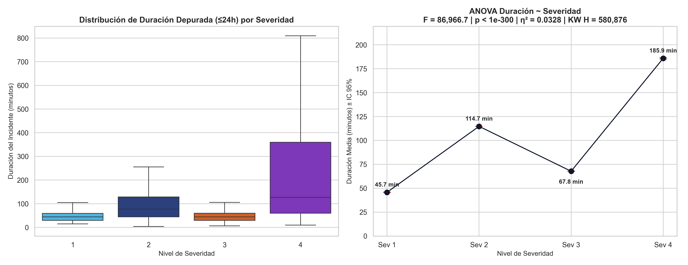
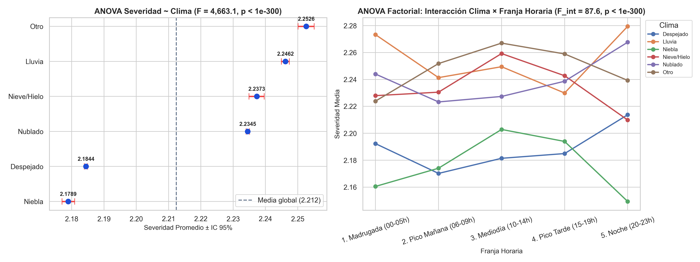
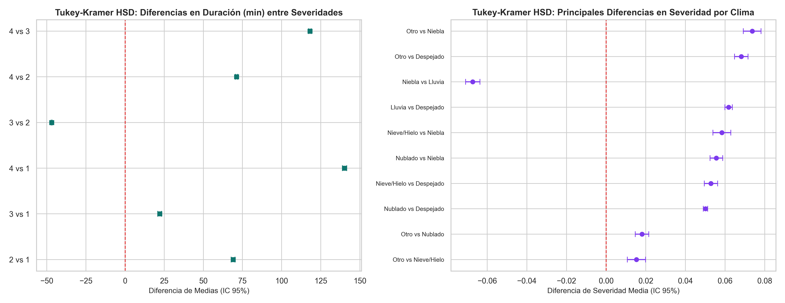
1.74M), Florida (880K) y Texas (583K) lideran en volumen bruto, mientras Miami, Houston y Los Ángeles encabezan la siniestralidad urbana. Sin embargo, al cruzar con datos demográficos del Censo, Carolina del Sur (7,119 x 100k hab.) y Oregón (4,244 x 100k hab.) superan en riesgo relativo per cápita, demostrando que la planeación vial debe combinar volumen absoluto e incidencia ajustada por población.17.68%) y entre las 15:00 y 18:00 horas (pico vespertino), siendo las autopistas interestatales (I-95, I-5, I-10) los corredores con mayor proporción de eventos graves (32.44% en Sev 3–4).22.76% graves) y la nieve/hielo (19.95% graves) elevan de forma estadísticamente significativa la severidad promedio (ANOVA p < 10⁻³⁰⁰), con interacción significativa según la franja horaria..000000000), separar outliers de duración superiores a 24 horas (explicando la brecha media 444 min vs mediana 75 min), corregir el orden alfabético en el ranking de vías y depurar falsos positivos toponímicos en la extracción NLP de tipos de vehículo.